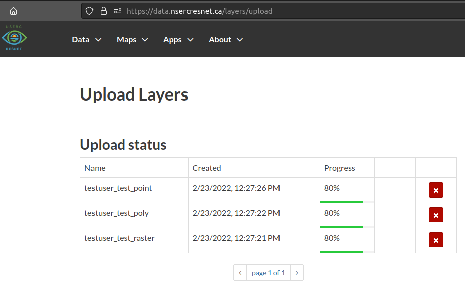

ResNet Data Portal User Guide
Chapter 1 Overview
The ResNet Data Portal was developed using GeoNode, an open-source platform for sharing geospatial maps and data. This document is intended to summarize and supplement the official GeoNode Documentation.
1.1 Getting started
- Register a new account
- Setup your user profile
- Join a group for your Landscape or Theme
- Download the example data
- Upload your first layers
As of 2022-02-23: There is an issue with the layer upload user interface where the progress indicator appears to halt at 80%. You should still be able to view your new layer by navigating to Data > Layers. We are working to resolve this issue.
